Migration, Urbanicity, and Health: Mutually reinforcing contextual and compositional place-based determinants of health
Introduction
- Place-based health can be categorized as:
- Contextual factors: Structural characteristics (greenspace, healthcare access).
- Compositional factors: Attributes of individuals (demographics, health behaviors).
- Context and composition are mutually reinforcing (e.g., built environment influencing behaviors).
- Both affect and are influenced by migration patterns. VENN DIAGRAM HERE??
- Typical measures of place often ignore the dynamic influence of migration
- Typical studies of migration often examine individual-level effects instead of place-level impacts
Contextual Factors
- Defined by structural and environmental characteristics.
- Key elements:
- Socioeconomic conditions (e.g., poverty, unemployment, education).
- Physical environment (e.g., air quality, green spaces).
- Social infrastructure (e.g., community organizations, access to healthcare).
- Influence health outcomes and contribute to disparities.
Compositional Factors
- Defined by characteristics of individuals in a place.
- Key elements:
- Demographics (age, gender, race).
- Socioeconomic status (SES) (income, education).
- Health behaviors (diet, physical activity).
- Influenced by contextual factors (e.g., access to resources).
Urbanicity
- Defined by population density and proximity to urban centers.
- Both a contextual and compositional factor.
- Dual hypotheses:
- Urban Health Penalty: Negative effects (e.g., pollution, stress).
- Urban Advantage: Positive effects (e.g., access to resources, opportunities).
- Affects migration patterns and health outcomes.
Urbanicity
Migration as a Cause and Effect
- Cause: Reshapes demographic and socioeconomic composition.
- Effect: Driven by push/pull factors (e.g., job opportunities, environmental quality)
Implications:
Migration is often a driver of urbanicity-related inequalities
Urbanicity-related inequalities are related to climate susceptibility
Urbanicity-related inequalities are related to political realities
Aims:
- Quantify the associations between place and self-reported mental health at the county level
- Explore how county-level migration can enhance our capacity to understand and explain county-level health
- Identify how a county’s position within a migration system may be related to county-level health
Aim 1: Hypotheses
Quantify the associations between place and self-reported mental health at the county level
Hypothesis 1A: County-level averages in poor mental health days are related to urbanicity after accounting for county-level demographic differences
Hypothesis 1B: This relationship can be explained by differences in factors linked to the built environment (e.g. access to exercise, mental health providers, air pollution, violent crime, and severe housing problems)
Note:
Aim 1 findings have been published in the Community Mental Health Journal.
Aim 1: Data
All data come from the County Health Rankings and Roadmaps 2021 dataset
Outcome: self-reported poor mental health days from the Behavioral Risk Factor Surveillance System (BRFSS)
Exposure: urbanicity, as defined by the National Center for Health Statistics (NCHS)
Controls: sociodemographic makeup of each county
Aim 1: Data
All data come from the County Health Rankings and Roadmaps 2021 dataset
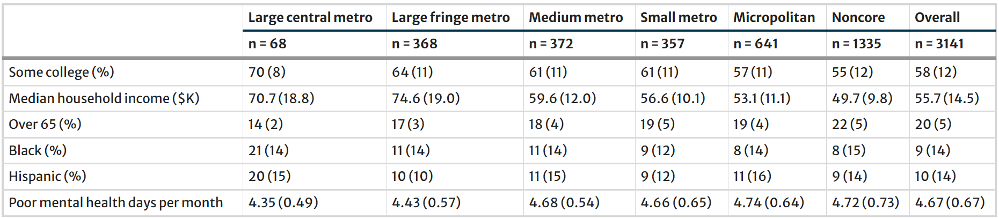Aim 1: Approach
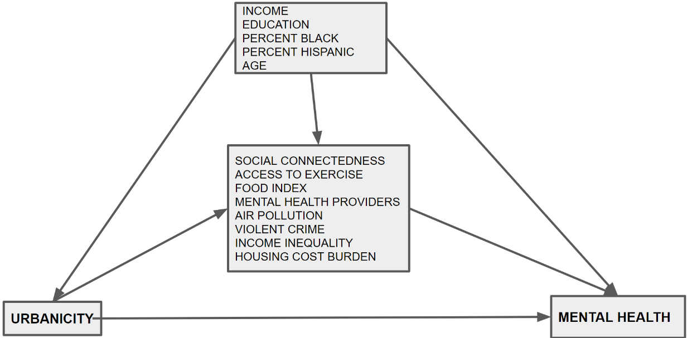Aim 1: Hypothesis 1A Approach
County-level averages in poor mental health days are related to urbanicity after accounting for county-level demographic differences
Calculate propensity scores
- We used logistic regression to calculate the propensity of belonging to a given urbanicity category conditional on confounding variables (education, income, percent Black, percent Hispanic, age) relative to reference category (small metro)
Calculate relative change in poor mental health days
- We used a mixed effects linear regression model with random effect for state (with inverse probability weights)
Aim 1: Hypothesis 2A Approach
The relationship between urbanicity and mental health can be explained by differences in factors linked to the built environment
We investigated 8 potential mediating factors:
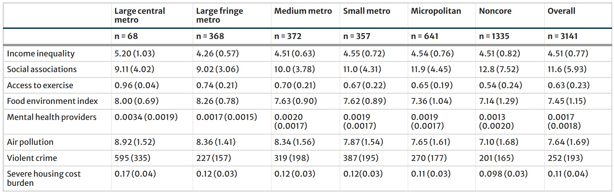Aim 1: Hypothesis 2A Approach
The relationship between urbanicity and mental health can be explained by differences in factors linked to the built environment
Mediation analysis in two steps (CITE)
Mentally unhealthy days ~ mediator + urbanicity
Mediator ~ urbanicity
Estimate of mediation: effect of urbanicity on mediator * effect of mediator on mentally unhealthy days
Aim 1: Results
Controlling for state, age, income, education, and race/ethnicity, large central metro counties reported 0.24 fewer average poor mental health days than small metro counties (t = -5.78, df = 423, p < 0.001)
Noncore counties had 0.07 more average poor mental health days than small metro counties (t = 3.06, df = 1690, p = 0.002)
Better mental health in large central metro counties was partially mediated by differences in the built environment, such as better food environments. Poorer mental health in noncore counties was not mediated by considered mediators.
Aim 1: Pitfalls and Alternatives
BRFSS data is modeled at the state level
We are using race and ethnicity as proxies for lived experiences that may differ by identity due to systemic injustices CITE
Model dependent
Our findings are statistically significant but not clinically or biologically significant
County-level analyses may not adequately capture neighborhood nuances
Ecological analyses - which matters more: geography or population?
Aim 2: Hypotheses
Explore how county-level migration can enhance our capacity to understand and explain county-level health
Hypothesis 2A: County-to-county migration patterns improve the explainability of autoregressive models of county-level health outcomes
Hypothesis 2B: The role that county-to-county migration flows plays in county-level health outcomes differs signficantly between rural and urban counties
Hypothesis 2C: Taking into account unmeasured factors in county-to-county migration flows improves our ability to explain county-level health outcomes as well as the differential role that migration plays in urban versus rural counties
Aim 2: Data
All analyses are from the perspective of a destination county of migration. Counties are included in our analyses if they:
Are a migration destination
Are part of the contiguous US
Included a total of 3107 US counties in our analyses.
Used years 2011 to 2019 (9 years total)
Aim 2: Variables
Outcome: County-level age-adjusted premature (before age 75) mortality rates from CDC WONDER for 2011 through 2019
We refer to the county-level age-adjusted premature mortality rate of county \(i\) at time \(t\) as \(y_{it}\).
Aim 2: Variables
Baseline explanatory factor: lagged county-level age-adjusted premature mortality
We refer to the county-level age-adjusted premature mortality rate of county \(i\) at time \(t-1\) (i.e. the prior year) as \(y_{i,t-1}\)
Aim 2: Variables
Primary explanatory factor: weighted average migration term, denoted \(mig_{it}\) for destination county \(i\) in year \(t\). This term accounts for compositional change in a county as individuals move into a county. It is essentially a weighted average of the lagged mortality rates from all origin counties.
\[ mig_{it} = \frac{ \sum_{j\ne i} out_{jit} y_{j,t-1} + y_{i,t-1} (pop_{i, t-1} - \sum_{j\ne i} out_{ijt})}{ \sum_{j\ne i} out_{jit} + (pop_{i,t-1} - \sum_{j\ne i} out_{ijt})} \]
\(y_{i, t-1}\) is the lagged premature age-adjusted mortality rate of county \(i\)
\(pop_{i,t-1}\) is the population under age 75 of county \(i\) in the prior year \(t-1\)
\(out_{ijt}\) represents the number of individuals from county \(j\) who moved to a destination county \(i\) between year \(t-1\) and year \(t\)
Aim 2: Variables
Secondary explanatory factor: urbanicity as defined by the NCHS (same as Aim 1), grouped into urban and rural
n = 1948 rural counties
n = 1159 urban counties
Aim 2: Variables
Exploratory explanatory factor: adjusted migration term, denoted \(amig_{it}\) for county \(i\) in year \(t\) with new parameters \(k_{ij}\) and \(l_i\) for each origin-destination pair.
\[ amig_{it}(k_{ij}, l_i) = \frac{ \sum_{j\ne i} out_{jit} ( y_{j,t-1} + k_{ij}) + (y_{i,t-1} + l_i) (pop_{i, t-1} - \sum_{j\ne i} out_{ijt})}{ \sum_{j\ne i} out_{jit} + (pop_{i,t-1} - \sum_{j\ne i} out_{ijt})} \]
When \(k_{ij} <0\) : individuals moving from county \(j\) to county \(i\) are healthier, on average, than the typical person in their origin county \(j\)
When \(k_{ij} >0\) : individuals moving from county \(j\) to county \(i\) are less healthy, on average, than the typical person in their origin county \(j\)
When \(l_i < 0\) : individuals staying in county \(i\) are healthier, on average, than the typical person in county \(i\).
When \(l_i > 0\) : individuals staying in county \(i\) are less healthy, on average, than the typical person in county \(i\).
Aim 2: Variables
Exploratory explanatory factor: adjusted migration term, denoted \(amig_{it}\) for county \(i\) in year \(t\)
Let \(d_{ij} = k_{ij} - l_i\). Then:
\[ amig_{it} = \frac{ \sum_{j\ne i} out_{jit} ( y_{j,t-1} + l_i + d_{ij}) + (y_{i,t-1} +l_i)( pop_{i, t-1} - \sum_{j\ne i} out_{ijt})}{ \sum_{j\ne i} out_{jit} + (pop_{i,t-1} - \sum_{j\ne i} out_{ijt})} \]
Aim 2: Variables
Exploratory explanatory factor: adjusted migration term, denoted \(amig_{it}\) for county \(i\) in year \(t\)
\[ amig_{it} = \frac{ \sum_{j\ne i} out_{jit} ( y_{j,t-1} + d_{ij}) + y_{i,t-1} (pop_{i, t-1} - \sum_{j\ne i} out_{ijt})}{ \sum_{j\ne i} out_{jit} + (pop_{i,t-1} - \sum_{j\ne i} out_{ijt})} +l_i\]
Aim 2: Variables
Exploratory explanatory factor: adjusted migration term, denoted \(amig_{it}\) for county \(i\) in year \(t\)
\[ amig_{it} = \frac{ \sum_{j\ne i} out_{jit} ( y_{j,t-1} + d_{ij}) + y_{i,t-1} (pop_{i, t-1} - \sum_{j\ne i} out_{ijt})}{ \sum_{j\ne i} out_{jit} + (pop_{i,t-1} - \sum_{j\ne i} out_{ijt})}\]
Where \(d_{ij}\) accounts for health-related selection of migrants to county \(i\) from county \(j\).
When \(d_{ij} > 0\), county \(i\) tends to attract less healthy individuals
When \(d_{ij} < 0\) county \(i\) tends to attract healthier individuals
Aim 2: Models
Baseline Model:
\[ y_{it} = \beta_0 + \beta_{1t} + \beta_{2}y_{t-1,i} + \mu_{i} + \epsilon_{it} \]
where \(\beta_0\) is the intercept,
\(\beta_{1t}\) is a coefficient for the effect of each year \(t\)
\(\beta_2\) is a coefficient to capture the effect of lagged premature age-adjusted mortality,
\(\mu_i\) is a random intercept for each county \(i\)
and \(\epsilon_{it}\) represents an error term
Aim 2: Models
Baseline Model:
Spatial error:
\[ \epsilon_{it} = \lambda W \epsilon_{it} + u_{it} \]
Where \(\lambda\) is a scalar to represent the magnitude of spatial dependency
\(W_{ij}\) is an entry in a spatial weights matrix with row-standardized weights. It was created using the “queen” criterion from the spdep R package [@spdep-2], which considers counties that share any point as neighbors.
\(\mu_{it}\) represents the independent random error term for each county and each year.
Aim 2: Models
Iterative process:
Added splines for \(y_{i,t-1}\)
Added \(mig_{it}\) with and without splines (Hypothesis 1)
Added interaction between \(mig_{it}\) and urbanicity (Hypothesis 2)
Replaced \(mig_{it}\) with \(amig_{it}\) and tested values of \(d_{ij}\) incrementing by 50 from -200 to 200 in units of premature deaths per 100,000 population
Tested values of \(d_{ij}\) dependent upon the urbanicity category of origin county \(j\) and destination county \(i\) such that \(d_{ij}\) could be one of four values: \(d_{uu}\) (urban to urban), \(d_{rr}\) (rural to rural), \(d_{ru}\) (rural to urban), and \(d_{ur}\) (urban to rural) where each of \((d_{uu}, d_{rr}, d_{ru}, d_{ur})\) were varied, factorially, incrementing first by 50 from -200 to 200 and then by 20 from -80 to 80 such that 13,122 \((= 9^4 * 2)\) total combinations were tested.
Aim 2: Results
Hypothesis 1: Does the migration term add explainability to the baseline model?
YES - models including the \(mig_{it}\) term had lower BIC scores than models without.
Aim 2: Results
Hypothesis 2: Does the role of \(mig_{it}\) differ between rural and urban counties?
YES - \(mig_{it}\) significantly enhances model explainability when accounting for urbanicity
Aim 2: Results
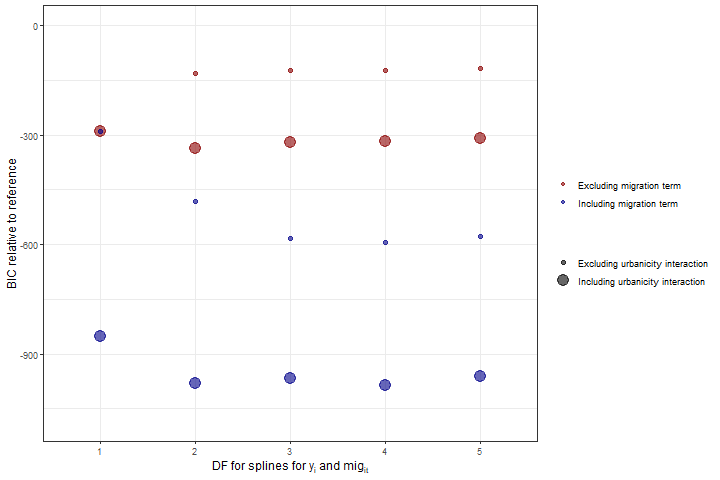Aim 2: Results
Hypothesis 3: How can we account for unmeasured factors?
Health-related selection may not be important to modeling county-level health. BIC score is minimized when \(d_{ij} = 0\).
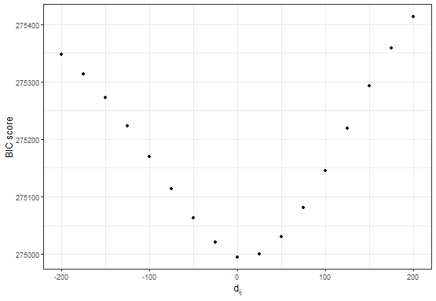Aim 2: Results
Hypothesis 3: How can we account for unmeasured factors?
Health-related selection may be important to modeling county-level health when we account for urbanicity. BIC score is minimized when \((d_{uu} = -100, d_{rr} = 0, d_{ru} = 0, d_{ur} = 20)\).
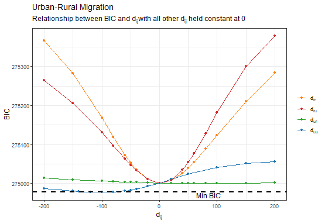Aim 2: Pitfalls and Alternatives
Regression to the mean
Internal migration only
IRS data issues ; only approximately 45% of the total US population, not including individuals who are undocumented
Pre-covid
Aim 3: Hypotheses
Is position within a migration system predictive of county-level health?
Aim 3: Data
Outcome: county-level age-adjusted rates of premature mortality
Predictor: tensor decomposition loadings assessed from a
Aim 3: Approach
Constructing the tensor
A CUBE! Origin, destination, time
Each entry in the tensor represents the \(log(1+n)\) transformed number of migrating individuals from origin \(i\) to destination \(j\) in time period \(k\).
Aim 3: Approach
Tensor Decomposition
Non-Negative Tensor Factorization (NTF) from the nnTensor R package. Represented as: \[𝑋≈ \sum_{r=1}^R{o_{ir}\bullet d_{jr}\bullet t_{kr}}\] Where each \(rth\) component corresponds to a unique “migration system”, and the loadings \((o_{ir}, d_{jr}, t_{kr})\) represent the significance of each origin county \(i\), destination county \(j\), and year \(k\) to each migration system \(r\).
Aim 3: Approach
Spatial modeling
Predictor variables: \(o_{ir}, d_{jr}, t_{kr}\)
- Loadings from the tensor decomposition corresponding to origin, destination, and time
Outcome variable: \(y_{it}\)
- Premature age-adjusted mortality rate
Modifier: \(Urbanicity_n\)
- Six categories (same as Aim 1): large central metro, large fringe metro, medium metro, small metro, micropolitan, noncore
\[ y_{it} = \beta_0 + \sum_{r=1}^{R} \beta_{o_r} o_{ir} + \sum_{r=1}^{R} \beta_{d_r} d_{jr} + \sum_{r=1}^{R} \beta_{t_r} t_{kr} + \sum_{n=2}^{6} \gamma_n \text{Urbanicity}_n + \mu_{it} \]
Aim 3: Results
Component Selection

Aim 3: Three migration systems
System 1: Urban to rural
Aim 3: Three migration systems
System 1: Urban to rural
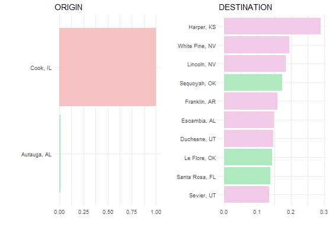Aim 3: Three migration systems
System 2: Specific phenomena
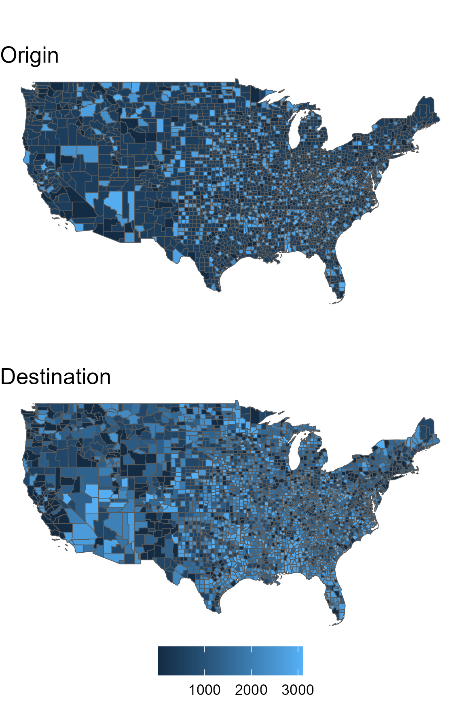Aim 3: Three migration systems
System 2: Specific phenomena
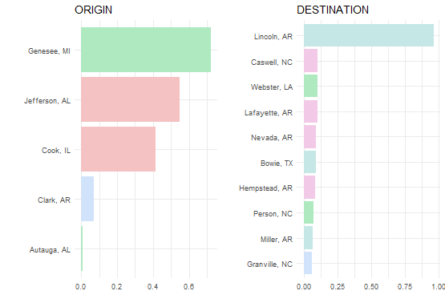Aim 3: Three migration systems
System 3: State borders
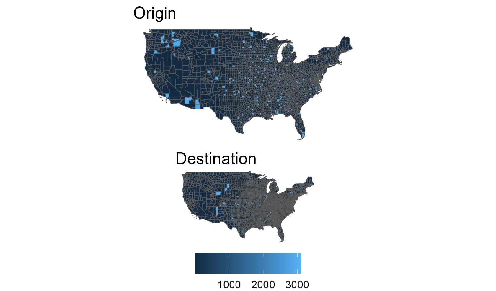Aim 3: Three migration systems
System 3: State borders
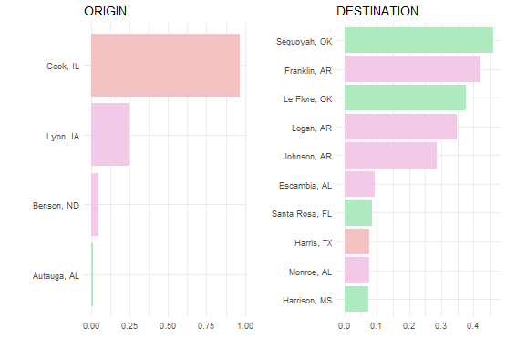Aim 3: Three migration systems
Temporal trends
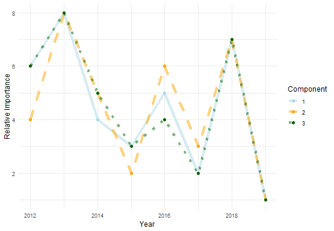Aim 3: Results
Connection to county-level health
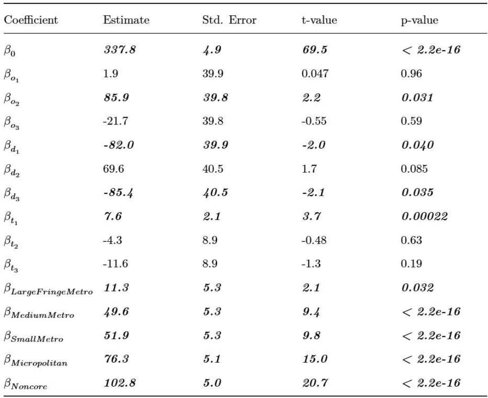
Aim 3: Pitfalls and Alternatives
Tensor decomposition is a non-convex problem
IRS data
County-level internal migration
Future Questions
Need for smaller unit of analysis (census tract? mobile device?) and more inclusive data
Can we replicate these findings using the ACS five year data?
Acknowledgements
CHRR folks
Mom, Dad, Andrew
Friends
Lesotho folks: Palesa and Naledi, Grant and Emily, Themba, Mathabo